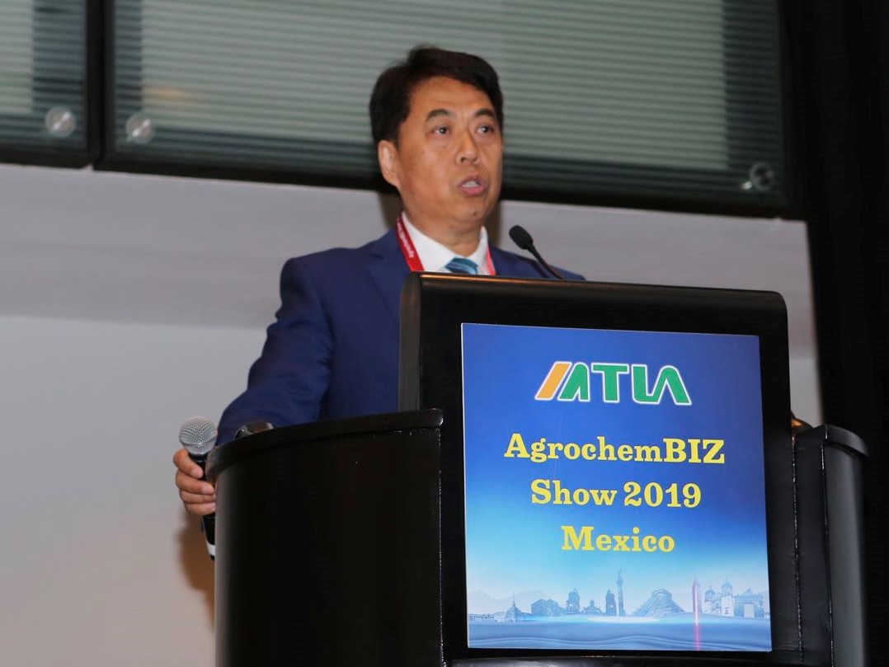
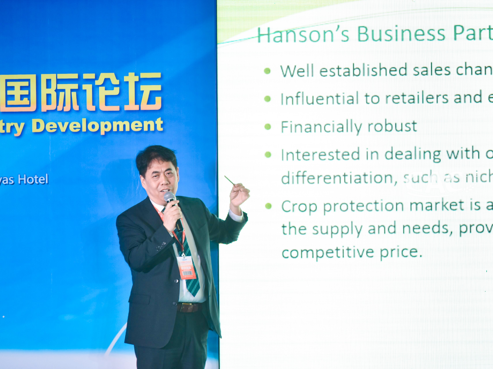

Agrochemical Sales in Canada
We sell both technical and formulations of glyphosate, glufosinate, s-metolachlor, boscalid, florasulam
and bentazon. We can source the prothioconazole, clethodim, flucarbazone, tebuconazole, and metalaxyl
from China and India.
Here are product labels we have registered at PMRA, Health Canada:
GH Glufosinate ammonium technical
herbicide
Foison Glufosinate Ammonium 200 SN
FOISON GLYPHOSATE POTASSIUM SALT 540, English Label, Reg No. 33976
FOISON GLYPHOSATE POTASSIUM SALT 540, French Label, Reg No. 33976
GH GLYPHOSATE 98 % TECHNICAL
FOISON Glyphosate IPA 41% SL
Xinan GLYPHOSATE 96% TECHNICAL
Lier Glufosinate ammonium 95% technical
Zhongshan S-metolachlor Technical 99%
Zhongshan BOSCALID TECHNICAL 98%
Zhongshan Florasulam
Technical 98%
Zhongshan Clomazone Technical
Intermediate Procurement for Chinese Pesticide Manufacturers
The shutdown of raw material plants has made pesticide synthesis difficult due to the stringent
environmental protection pressures. More and more Chinese manufacturers would like to source key
intermediates abroad to meet their demands.
Here is the list of intermediates we can supply,
- Cyclohexan-1,3-dion
- 4-chlorobenzaldehyde
- Resorcinol
Product Registrations at PMRA
Hanson Agrochemical Consulting has been widely recognized and highly praised by the industry for its
customer-first, contract-credit, good-faith, cost savings, and fast registration. Hanson
Agrochemical
Consulting is very proficient in the operational procedures for pesticide registration in Canada
(PMRA)
and the United States (EPA), especially for data compensation.
We have submitted 30+ product registrations to PMRA since 2014, and 8 active ingredients have been
issued
with registration certificates.
More and more generic products will be commercially available in Canadian market, which will give
Canadian farmers an alternative crop protection tool, making Canadian agriculture industry more
robust
and competitive.
Acquisitions on Newly Patented Active Ingredients (AIs) and Plant Biotechnologies Discovered in
China
China has become a powerhouse of new active ingredient (AI) discoveries, formulation innovations, and
pesticide application improvements, especially after ChemChina acquired Syngenta and Adama 2 years
ago.
Around 40 plus new AIs have been patented in the last decade, a few of them have been successfully
commercially launched in China and surrounding countries.
Apart from that, China has been actively doing transgenic crop researches, such as gene-editing crops
that are equipped with various traits, such as high yield, adversity resistance, insect resistance,
and
herbicide resistance.
As a consultant to a couple of multinational companies, we helped them acquire the bio fungicides,
diamide insecticide molecules recently. we listed the following the chemistries, and list of the
patent
holders for your references. I can bridge what you need and the patented molecules that Chinese
research
communities can offer, and we can get the non-disclosure agreement (NDA) and the material transfer
agreement (MTA) executed for you.
Product Registrations at CFIA (Canadian Food Inspection Agency)
We are going to submit the sulfur, chlormequat chloride, mepiquat, 3-indolebutyric acid, Cytokinin
(as
kinetin), Seaweed extract, paclobutrazol to CFIA soon.
We also source gibberellic acid, brassinolide, sulfur, and chlormequat chloride from China and India.
The company has been conducting a comprehensive pesticide market survey for Phillips McDougall in
Asia
Pacific, such as China, Thailand, Vietnam, the Philippines, the collected data include the top 30
insecticides, fungicides and herbicides in terms of sales volume, ex-manufactures values and target
crops.
Hanson
team has updated and published financial performance, product portfolios, R&D, and future directions
of
the listed crop protection companies yearly.
Hanson is also capable of collecting the custom data and analysing pesticide exports by target
countries, AIs, values, and manufacturers/exporters.
Hanson team has published Agrow Product Registration Overview Reports for United States, China,
Canada,
Thailand, Vietnam, and the Philippines during 2017-2018. Up to now, more 10 product market and
registration reports have been published by Agrow, London UK.
We renew the financial performance of top 30 Chinese crop protection companies every year.
Mr. Shuyou Han is an invited speaker at CAC, the largest agrochemical show held every March in Shanghai.
He not only talks about crop protection market, registration, distribution in Canada, he also presents
on seed treatment, plant biotechnology, new AI discovery, and mergers & acquisitions. His talk on “how
China-made pesticides reshape crop protection market in Latin America?” triggered a huge interest in
audience on
May 18, 2019 in Mexico City.

Shuyou Han talked at AgrochemBIZ Show 2019, Mexico City, Mexico

Shuyou Han talked at CAC, Shanghai, China